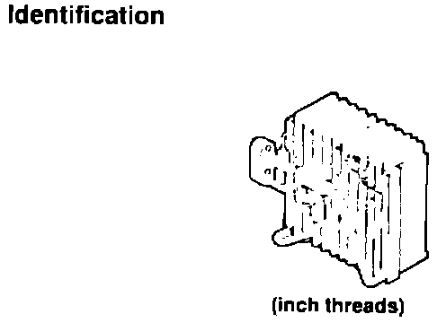

R-12

NOTE:
The NSX R-134a evaporator has inch threads, therefore requiring an identification label. The Legend evaporator has metric threads with no label. Do not substitute R-12 parts for R-134a parts.
Reason for Change
Because R-134a has a higher pressure load than R-12.